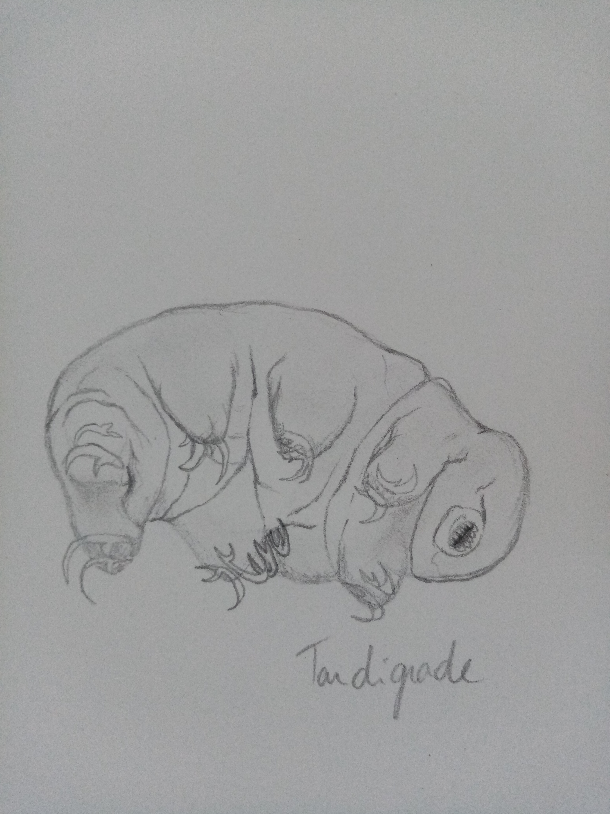

Dessins naturalistes du Mois
Plusieurs animaux sont déjà allé dans l'espace comme une chienne Russe nommée Laika ou une chatte francaise nommée Felicette ou plus recemment un targidrade ou globe.
Remarque : des tentatives ont aussi été réalisé avec des singes, un rat, un poisson et deux araignées.


Flore
A renseigner